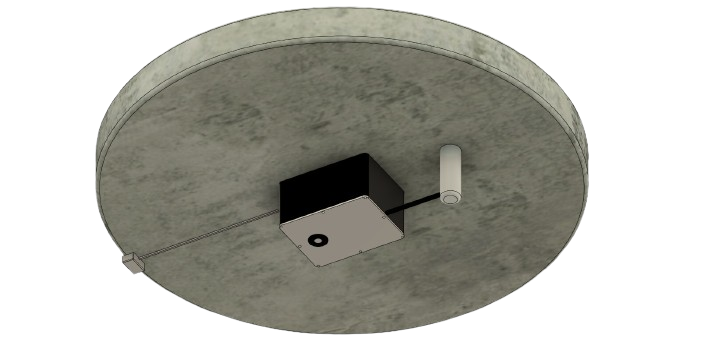

Manufactured by D-Tech Robotics.
Industrial IoT underground node.
The D-TECH SM-X4 is an intrinsically safe, multi-parameter IoT sensing node specifically engineered for direct bolt-on installation beneath ductile iron and composite manhole covers. It delivers uninterrupted surveillance of subterranean sewer mains, storm runoffs, and telecommunications vaults.
Corrosion-resistant UV-stabilized polymer & 316L stainless steel enclosure with integrated omnidirectional slot antenna tuned for subterranean signal penetration through roadway covers.
Bolt-on expandable perimeter bracket requiring <15 minutes retrofit without road excavation, external wiring, or trench cutting. Field-replaceable battery pack.

Comprehensive mechanical, electrical, connectivity, and environmental parameters for D-TECH SM-X4.
| PARAMETER CATEGORY | SPECIFICATION ATTRIBUTE | ENGINEERING VALUE | STANDARD / RATING |
|---|---|---|---|
| // MECHANICAL & PHYSICAL SPECIFICATIONS | |||
| Dimensions | Enclosure Form Factor | Ø 180 mm × H 45 mm | Low profile under-cover disc |
| Weight | Total Device Weight | 1.25 kg (including battery) | 316L bracket: +0.45 kg |
| Enclosure Material | Housing Composition | Polycarbonate / PBT Alloy + 316L SS | Corrosion & UV resistant |
| Operating Temp | Operational Climate Range | -40°C to +85°C (-40°F to +185°F) | Industrial grade components |
| Mechanical Impact | Shock & Drop Resistance | IK10 (20 Joules impact) | EN 62262 standard |
| Ingress Protection | Water & Dust Ingress | IP68 (5 meters for 72 hours) | IEC 60529 certified |
| // SENSING SUITE & METROLOGY | |||
| Level Sensing | Ultrasonic Time-of-Flight | 0.1 m to 4.0 m (±1.0 mm accuracy) | Sub-millimeter resolution |
| Gas Detection | Multi-Gas Electrochemical Array | H₂S (0–200 ppm), CH₄ (0–100% LEL), CO, O₂ | Hazard alert <10s response |
| Cover Displacement | 3-Axis Tilt & Magnetic Tamper | Tilt detection >5°, Hall-effect sensor | Real-time unseating alarm |
| Microclimate | Internal Ambient Conditions | Temp ±0.3°C, Humidity 0–100% RH, Pressure | Inundation pre-warning |
| // CONNECTIVITY & TELEMETRY | |||
| Primary Cellular | Narrowband IoT (NB-IoT) | LTE Cat NB1 / NB2 (B1, B3, B5, B8, B20, B28) | 3GPP Release 14 compliant |
| LPWAN Backup | LoRaWAN Option | Region configurable: EU868 / US915 / AS923 | LoRa Alliance Class A |
| Antenna System | Subterranean RF Antenna | Integrated slotted-cavity directional array | Penetrates cast iron covers |
| Data Protocols | Cloud Telemetry Transport | MQTT-SN, CoAP, HTTPS, LwM2M | AES-256 GCM encrypted |
| // POWER & ELECTRICAL SPECIFICATIONS | |||
| Power Source | Internal Battery Pack | Lithium Thionyl Chloride (Li-SOCl₂) 19 Ah / 3.6V | Non-rechargeable industrial cell |
| Battery Lifespan | Operating Autonomous Life | 5 to 7+ Years (at 1h reporting interval) | Quiescent draw: < 12 µA |
| // SAFETY & REGULATORY COMPLIANCE | |||
| Hazardous Area | Explosive Atmosphere Safety | ATEX II 1G Ex ia IIC T4 Ga | IECEx Zone 0 certified |
| Certifications | Regulatory Approvals | CE, FCC Part 15, RoHS, WEEE, ATEX Zone 0 | Global compliance verified |
Designed to link directly into city SCADA control centers, municipal drainage GIS platforms, and cloud telemetry databases.
ARM Cortex-M4 low-power microcontroller performs continuous edge filtering, noise rejection, threshold checking, and battery state analysis.
Direct transmission through cellular NB-IoT towers or regional LoRaWAN gateways with zero required roadside repeater infrastructure.
Standardized RESTful APIs, Webhooks, and Modbus TCP bridge for seamless ingestion into existing smart city utility dashboards.
Standardized universal bracket mechanism engineered for immediate deployment across existing municipal infrastructure without drilling the cover or trenching roads.
DEVELOPER & MUNICIPAL PARTNERSHIPS
We manufacture the SM-X4 and provide full SDKs, hardware evaluation kits, CAD mounting models, and cloud API access for municipal pilots and industrial utilities.